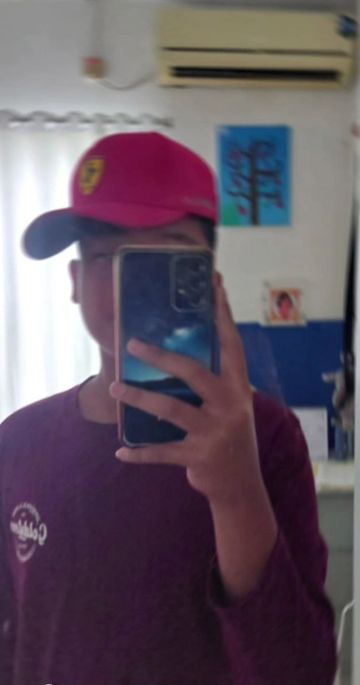

Karya Nyata dari Proses Belajar

(Adzin Muhammad Aryasatya)
Adzin Muhammad Aryasatya,9 An-nasr,SMPIT Al-Haraki.
Nama saya Adzin Muhammad Aryasatya saya tinggal di Depok di GDC (Grand Depok City) saya 2 bersaudara saya memiliki satu adik laki-laki dan hoi saya adalah bermain basket, berenang dan bermain alat musik.
Minat saya ada di olahraga seperti berenang, hobi saya bermain basket,berenang dan juga bermain gitar, kemampuan yang saya miliki adalah saya ahli dalam olahraga.
Cita-cita saya menjadi seorang pilot dan juga harapan saya adalah saya berharap ke depan nanti saya akan menjadi pribadi yang lebih baik lagi dari sebelumnnya.
Kesan saya adalah adalah kelas sembilan sangatlah menyenangkan.